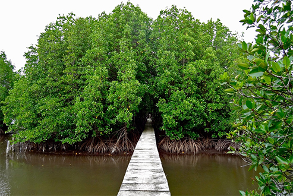

ខេត្តកោះកុង
ខេត្តកោះកុងមានព្រំប្រទល់ខាងជើងជាប់នឹងខេត្តពោធិ៍សាត់ ខាងកើតជាប់នឹងខេត្តកំពង់ស្ពឺ កំពត និងខេត្តព្រះសីហនុ ខាងត្បូង និង ខាងលិចជាប់នឹងឈូងសមុទ្រថៃ និងមួយផ្នែកនៃខេត្តត្រាត ប្រទេសថៃ ។ ខេត្តកោះកុងផ្តាច់ចេញពីខេត្តកំពតតាមព្រះរាជក្រមលេខ ២៤សន ចុះថ្ងៃទី
១៣ ខែមករា ឆ្នាំ ១៩៥៣ នៃគ្រឹស្តសករាជ ។ ខេត្តកោះកុងត្រូវបានបែងចែកជា ៨ស្រុក ៣៣ ឃុំ ៦០៤ ភូមិ ។ ខេត្តកោះកុងមានរមណីយដ្ឋានធម្មជាតិយ៉ាងច្រើនដើម្បីទាក់ទាញភ្ញៀវទេសចរណ៌។ ហើយភាគច្រើនរម្មណីយដ្ឋានក្នុងខេត្តកោះកុង គឺសម្បូរទៅដោយសម្បិត្តធម្មជាតិ ដូចជា ភ្នំ ទឹកជ្រោះ
និងសមុទ្រ។ ហើយកោះកុងក៏មានជួរភ្នំ និងព្រៃដ៏វែងដាច់កន្ទុយភ្នែកដែលគួរឲ្យចង់ទស្សនា បើសិនជាយើងធ្វើដំណើរតាមផ្លូវជាតិលេខ ៤៨ យើងនឹងឃើញទិដ្ឋភាពទាំងនោះដែលជា អេកូទេសចរណ៌របស់ខេត្ត។។ ក្រុងខេមរភូមិន្ទគឺជាក្រុងរបស់ខេត្តកោះកុងដែលស្ថិតនៅមាត់ព្រែកកោះប៉ោក្បែរឈូងសមុទ្រថៃ។
ហើយក្រុងខេមរភុមិន្ទឋិតនៅចំងាយប្រមាណ ១០គីឡូម៉ែត្រ ពីព្រំដែនខ្មែរ ថៃ និងប្រមាណ ២៧៥ គីឡូម៉ែត្រពីទីក្រុងភ្នំពេញ។ ចំពោះខេត្តនេះមានរម្មណីយដ្ឋានគួរឲ្យចាប់អារម្មណ៌មួយចំនួនដូចជា ទឹកធ្លាក់តាតៃ រម្មណីយដ្ឋានធម្មជាតិ ព្រៃកោងកាង(បាងកាយ៉ាក) កោះកុងសាហ្វារីវើលដ៌
កោះយ៉(ប៉ាកខ្លង) ឆ្នេរសមុទ្រ និងកន្លែងកំសាន្តផ្សេងៗទៀត។ ចំណែកម្ហូបអាហារវិញនេះគឺមានគ្រឿងសមុទ្រស្រស់ៗ ប៉ុន្តែត្រូវសួរតំលៃមុនផងដើម្បីសុវត្តិភាព ពីព្រោះនៅកម្ពុជាយើងនៅកន្លែងណាក៏ដូចកន្លែងណាដែរឲ្យតែមានបុណ្យទាន……គឺអញ្ចឹងហើយ។
-> ទឹកធ្លាក់តាតៃ
ទឹកធ្លាក់តាតៃ ភាគនិរតីនៃប្រទេស គឺជាគោលដៅទេសចរណ៍ដ៏សំខាន់មួយចំពោះភ្ញៀវឆ្លងកាត់ខេត្ដជាយដែនមួយនេះ។ ទៅដល់ស្ពានវែងទីបួនឆ្លងកាត់ព្រែកតាតៃ ភ្ញៀវខ្លះអាចមានការរារែកចិត្ដថា តើគួរធ្វើដំណើរកម្សាន្ដគយគន់ទេសភាពតាមផ្ទៃទឹកដោយជិះនាវាទៅកាន់ទឹកធ្លាក់ដ៏ធំសម្បើម
ឬមួយគួរតែធ្វើដំណើរតាមរថយន្ដលើកំណាត់ផ្លូវរដិបរដុបប្រមាណ ២ គីឡូម៉ែត្រ?។ទូកកម្សាន្ដដែលចតរង់ចាំភ្ញៀវនៅគល់ស្ពានតាតៃនឹងអូសខ្លួនសន្សឹមៗតាមបណ្ដោយស្ទឹងដ៏ថ្លាយង់ដើម្បីទុកឱកាសឲ្យភ្ញៀវគយគន់សម្រស់ធម្មជាតិតាមមាត់ទឹកដ៏ត្រជាក់ល្ហឹមរហូតដល់រមណីយដ្ឋានទឹកធ្លាក់។ទឹកធ្លាក់តាតៃ
ភាគនិរតីនៃប្រទេស គឺជាគោលដៅទេសចរណ៍ដ៏សំខាន់មួយចំពោះភ្ញៀវឆ្លងកាត់ខេត្ដជាយដែនមួយនេះ។ ទៅដល់ស្ពានវែងទីបួនឆ្លងកាត់ព្រែកតាតៃ ភ្ញៀវខ្លះអាចមានការរារែកចិត្ដថា តើគួរធ្វើដំណើរកម្សាន្ដគយគន់ទេសភាពតាមផ្ទៃទឹកដោយជិះនាវាទៅកាន់ទឹកធ្លាក់ដ៏ធំសម្បើម
ឬមួយគួរតែធ្វើដំណើរតាមរថយន្ដលើកំណាត់ផ្លូវរដិបរដុបប្រមាណ ២ គីឡូម៉ែត្រ?។ទូកកម្សាន្ដដែលចតរង់ចាំភ្ញៀវនៅគល់ស្ពានតាតៃនឹងអូសខ្លួនសន្សឹមៗតាមបណ្ដោយស្ទឹងដ៏ថ្លាយង់ដើម្បីទុកឱកាសឲ្យភ្ញៀវគយគន់សម្រស់ធម្មជាតិតាមមាត់ទឹកដ៏ត្រជាក់ល្ហឹមរហូតដល់រមណីយដ្ឋានទឹកធ្លាក់។ទូកកម្សាន្ដដែលចតរង់ចាំភ្ញៀវនៅគល់ស្ពានតាតៃនឹងអូសខ្លួនសន្សឹមៗតាមបណ្ដោយស្ទឹងដ៏ថ្លាយង់ដើម្បីទុកឱកាសឲ្យភ្ញៀវគយគន់សម្រស់ធម្មជាតិតាមមាត់ទឹកដ៏ត្រជាក់ល្ហឹមរហូតដល់រមណីយដ្ឋានទឹកធ្លាក់។ទូកកម្សាន្ដដែលចតរង់ចាំភ្ញៀវនៅគល់ស្ពានតាតៃនឹងអូសខ្លួនសន្សឹមៗតាមបណ្ដោយស្ទឹងដ៏ថ្លាយង់ដើម្បីទុកឱកាសឲ្យភ្ញៀវគយគន់សម្រស់ធម្មជាតិតាមមាត់ទឹកដ៏ត្រជាក់ល្ហឹមរហូតដល់រមណីយដ្ឋានទឹកធ្លាក់។
-> ព្រៃកោងកាង

ស្ថិតក្នុងភូមិ ពាមក្រសោប ឃុំពាមក្រសោប ស្រុក មណ្ឌលសីមា ខេត្តកោះកុង សហគមន៍តំបន់ការពារធនធានធម្មជាតិពាមក្រសោប គឺជាកន្លែងទេសចរណ៍ព្រៃកោងកាងដ៏ធំមួយរបស់ខេត្ត កោះកុង ។កោងកាងជាប្រភេទរុក្ខជាតិសមុទ្រមួយប្រភេទ ដែលដុះនៅតាមបណ្ដោយឆ្នេរមានភក់ល្បប់
មានទឹកប្រៃជោរនាច ហើយធន់នឹងកំហាប់អំបិលខ្ពស់។ ព្រៃកោងកាងមិនត្រឹមតែមានប្រយោជន៍សម្រាប់មនុស្សទេ សូម្បីតែសត្វក៏ត្រូវពឹងផ្អែកលើវាដែរ។ ដូចជាជម្រកត្រី ខ្ចង ក្ដាមគ្រប់ប្រភេទរស់នៅ និងជាជម្រកពងកូនយ៉ាងសំខាន់។ ក្រៅពីនេះដើមកោងកាងជារបាំងយ៉ាងរឹងមាំសម្រាប់ការពារខ្យល់ព្យុះ
ឬរលកសមុទ្រ មិនឲ្យបោកបក់បំផ្លាញដំណាំ និងផ្ទះប្រជាពលរដ្ឋ ដែលរស់នៅតំបន់ឆ្នេរសមុទ្រ ផងដែរ។ស្ថិតក្នុងភូមិ ពាមក្រសោប ឃុំពាមក្រសោប ស្រុក មណ្ឌលសីមា ខេត្តកោះកុង សហគមន៍តំបន់ការពារធនធានធម្មជាតិពាមក្រសោប គឺជាកន្លែងទេសចរណ៍ព្រៃកោងកាងដ៏ធំមួយរបស់ខេត្ត
កោះកុង ។កោងកាងជាប្រភេទរុក្ខជាតិសមុទ្រមួយប្រភេទ ដែលដុះនៅតាមបណ្ដោយឆ្នេរមានភក់ល្បប់ មានទឹកប្រៃជោរនាច ហើយធន់នឹងកំហាប់អំបិលខ្ពស់។ ព្រៃកោងកាងមិនត្រឹមតែមានប្រយោជន៍សម្រាប់មនុស្សទេ សូម្បីតែសត្វក៏ត្រូវពឹងផ្អែកលើវាដែរ។
ដូចជាជម្រកត្រី ខ្ចង ក្ដាមគ្រប់ប្រភេទរស់នៅ និងជាជម្រកពងកូនយ៉ាងសំខាន់។ ក្រៅពីនេះដើមកោងកាងជារបាំងយ៉ាងរឹងមាំសម្រាប់ការពារខ្យល់ព្យុះ ឬរលកសមុទ្រ មិនឲ្យបោកបក់បំផ្លាញដំណាំ និងផ្ទះប្រជាពលរដ្ឋ ដែលរស់នៅតំបន់ឆ្នេរសមុទ្រ
ផងដែរ។ក្រៅពីនេះដើមកោងកាងជារបាំងយ៉ាងរឹងមាំសម្រាប់ការពារខ្យល់ព្យុះ ឬរលកសមុទ្រ មិនឲ្យបោកបក់បំផ្លាញដំណាំ និងផ្ទះប្រជាពលរដ្ឋ ដែលរស់នៅតំបន់ឆ្នេរសមុទ្រ ផងដែរ។
-> តំបន់អារ៉ែង
តំបន់អេកូទេសចរណ៍អារ៉ែងមានចម្ងាយប្រមាណ២៤គីឡូម៉ែត្រពីទីរួមស្រុកថ្មបាំង ដែលស្ថិតក្នុងភូមិសាស្ត្រភូមិជំនាប់ ឃុំជំនាប់ ស្រុកថ្មបាំង មានសក្ដានុពលលើ៖ ទី១. ព្រៃភ្នំ ២.ទឹកជ្រោះ ៣.សត្វព្រៃ ៤.ត្រីនាគ ៥. ក្រពើភ្នំ ៦.រូងភ្នំបូរាណ
និង៧.របាំប្រពៃណី។តំបន់អេកូទេសចរណ៍អារ៉ែងមានចម្ងាយប្រមាណ២៤គីឡូម៉ែត្រពីទីរួមស្រុកថ្មបាំង ដែលស្ថិតក្នុងភូមិសាស្ត្រភូមិជំនាប់ ឃុំជំនាប់ ស្រុកថ្មបាំង មានសក្ដានុពលលើ៖ ទី១. ព្រៃភ្នំ ២.ទឹកជ្រោះ ៣.សត្វព្រៃ ៤.ត្រីនាគ ៥. ក្រពើភ្នំ
៦.រូងភ្នំបូរាណ និង៧.របាំប្រពៃណី។តំបន់អេកូទេសចរណ៍អារ៉ែងមានចម្ងាយប្រមាណ២៤គីឡូម៉ែត្រពីទីរួមស្រុកថ្មបាំង ដែលស្ថិតក្នុងភូមិសាស្ត្រភូមិជំនាប់ ឃុំជំនាប់ ស្រុកថ្មបាំង មានសក្ដានុពលលើ៖ ទី១. ព្រៃភ្នំ ២.ទឹកជ្រោះ ៣.សត្វព្រៃ ៤.ត្រីនាគ
៥. ក្រពើភ្នំ ៦.រូងភ្នំបូរាណ និង៧.របាំប្រពៃណី។តំបន់អេកូទេសចរណ៍អារ៉ែងមានចម្ងាយប្រមាណ២៤គីឡូម៉ែត្រពីទីរួមស្រុកថ្មបាំង ដែលស្ថិតក្នុងភូមិសាស្ត្រភូមិជំនាប់ ឃុំជំនាប់ ស្រុកថ្មបាំង មានសក្ដានុពលលើ៖ ទី១. ព្រៃភ្នំ ២.ទឹកជ្រោះ ៣.សត្វព្រៃ
៤.ត្រីនាគ ៥. ក្រពើភ្នំ ៦.រូងភ្នំបូរាណ និង៧.របាំប្រពៃណី។តំបន់អេកូទេសចរណ៍អារ៉ែងមានចម្ងាយប្រមាណ២៤គីឡូម៉ែត្រពីទីរួមស្រុកថ្មបាំង ដែលស្ថិតក្នុងភូមិសាស្ត្រភូមិជំនាប់ ឃុំជំនាប់ ស្រុកថ្មបាំង មានសក្ដានុពលលើ៖ ទី១. ព្រៃភ្នំ ២.ទឹកជ្រោះ
៣.សត្វព្រៃ ៤.ត្រីនាគ ៥. ក្រពើភ្នំ ៦.រូងភ្នំបូរាណ និង៧.របាំប្រពៃណី។តំបន់អេកូទេសចរណ៍អារ៉ែងមានចម្ងាយប្រមាណ២៤គីឡូម៉ែត្រពីទីរួមស្រុកថ្មបាំង ដែលស្ថិតក្នុងភូមិសាស្ត្រភូមិជំនាប់ ឃុំជំនាប់ ស្រុកថ្មបាំង មានសក្ដានុពលលើ៖ ទី១. ព្រៃភ្នំ
២.ទឹកជ្រោះ ៣.សត្វព្រៃ ៤.ត្រីនាគ ៥. ក្រពើភ្នំ ៦.រូងភ្នំបូរាណ និង៧.របាំប្រពៃណី។តំបន់អេកូទេសចរណ៍អារ៉ែងមានចម្ងាយប្រមាណ២៤គីឡូម៉ែត្រពីទីរួមស្រុកថ្មបាំង។
-> ជីផាត
តំបន់អេកូទេសចរណ៍ជីផាត ដែលមានចម្ងាយពីទីរួមខេត្តកោះកុងប្រមាណ៨០គីឡូម៉ែត្រ មានសក្ដានុពលខ្លាំង ទី១.ទឹកធ្លាក់ ២.សត្វព្រៃ ៣.ទេសភាពតាមស្ទឹង ៤.ពាងបូរាណ ៥.ថ្មចេតិយ និង៦.ព្រៃភ្នំ។ តំបន់អេកូទេសចរណ៍ជីផាតស្ថិតក្នុងភូមិជីផាត ឃុំជីផាត
ស្រុកថ្មបាំង ខេត្តកោះកុង។តំបន់អេកូទេសចរណ៍ជីផាត ដែលមានចម្ងាយពីទីរួមខេត្តកោះកុងប្រមាណ៨០គីឡូម៉ែត្រ មានសក្ដានុពលខ្លាំង ទី១.ទឹកធ្លាក់ ២.សត្វព្រៃ ៣.ទេសភាពតាមស្ទឹង ៤.ពាងបូរាណ ៥.ថ្មចេតិយ និង៦.ព្រៃភ្នំ។ តំបន់អេកូទេសចរណ៍ជីផាតស្ថិតក្នុងភូមិជីផាត
ឃុំជីផាត ស្រុកថ្មបាំង ខេត្តកោះកុង។តំបន់អេកូទេសចរណ៍ជីផាត ដែលមានចម្ងាយពីទីរួមខេត្តកោះកុងប្រមាណ៨០គីឡូម៉ែត្រ មានសក្ដានុពលខ្លាំង ទី១.ទឹកធ្លាក់ ២.សត្វព្រៃ ៣.ទេសភាពតាមស្ទឹង ៤.ពាងបូរាណ ៥.ថ្មចេតិយ និង៦.ព្រៃភ្នំ។ តំបន់អេកូទេសចរណ៍ជីផាតស្ថិតក្នុងភូមិជីផាត
ឃុំជីផាត ស្រុកថ្មបាំង ខេត្តកោះកុង។តំបន់អេកូទេសចរណ៍ជីផាត ដែលមានចម្ងាយពីទីរួមខេត្តកោះកុងប្រមាណ៨០គីឡូម៉ែត្រ មានសក្ដានុពលខ្លាំង ទី១.ទឹកធ្លាក់ ២.សត្វព្រៃ ៣.ទេសភាពតាមស្ទឹង ៤.ពាងបូរាណ ៥.ថ្មចេតិយ និង៦.ព្រៃភ្នំ។ តំបន់អេកូទេសចរណ៍ជីផាតស្ថិតក្នុងភូមិជីផាត
ឃុំជីផាត ស្រុកថ្មបាំង ខេត្តកោះកុង។តំបន់អេកូទេសចរណ៍ជីផាត ដែលមានចម្ងាយពីទីរួមខេត្តកោះកុងប្រមាណ៨០គីឡូម៉ែត្រ មានសក្ដានុពលខ្លាំង ទី១.ទឹកធ្លាក់ ២.សត្វព្រៃ ៣.ទេសភាពតាមស្ទឹង ៤.ពាងបូរាណ ៥.ថ្មចេតិយ និង៦.ព្រៃភ្នំ។ តំបន់អេកូទេសចរណ៍ជីផាតស្ថិតក្នុងភូមិជីផាត
ឃុំជីផាត ស្រុកថ្មបាំង ខេត្តកោះកុង។តំបន់អេកូទេសចរណ៍ជីផាត ដែលមានចម្ងាយពីទីរួមខេត្តកោះកុងប្រមាណ៨០គីឡូម៉ែត្រ មានសក្ដានុពលខ្លាំង ទី១.ទឹកធ្លាក់ ២.សត្វព្រៃ ៣.ទេសភាពតាមស្ទឹង ៤.ពាងបូរាណ ៥.ថ្មចេតិយ និង៦.ព្រៃភ្នំ។